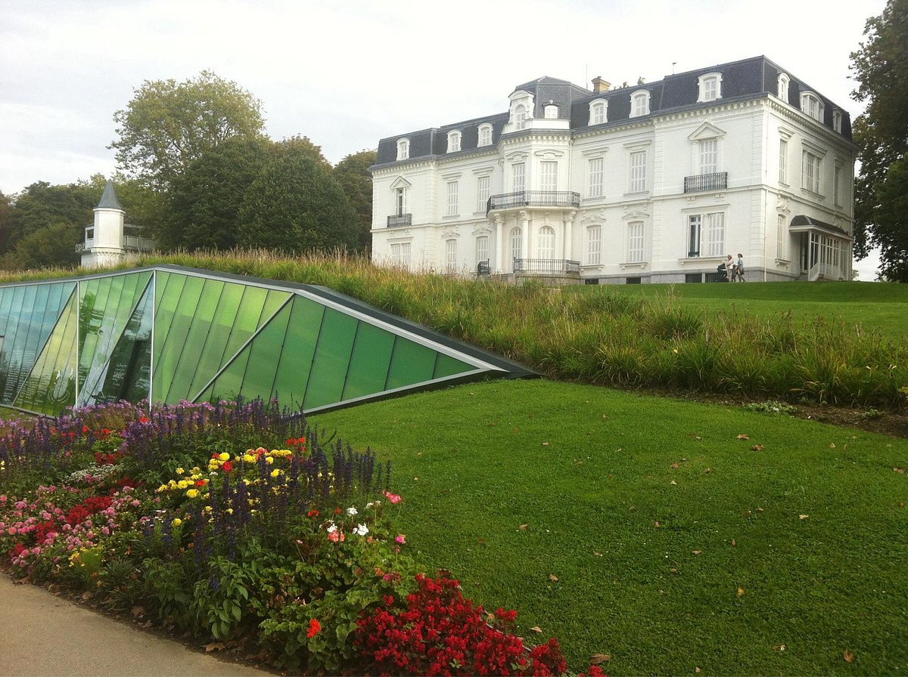

Park of Aiete
Noble and majestic. This is the Aiete Park. Located on one of the hills that surround the city, it stands out for its impressive gardens and, of course, for its palace.
Its walls witnessed the comings and goings of aristocratic figures such as Queen Elizabeth II, Queen Victoria of England, Queen María Cristina or Alfonso XIII, who chose the palace as their summer residence. It has recently been transformed into a cultural center brimming with creative activity.